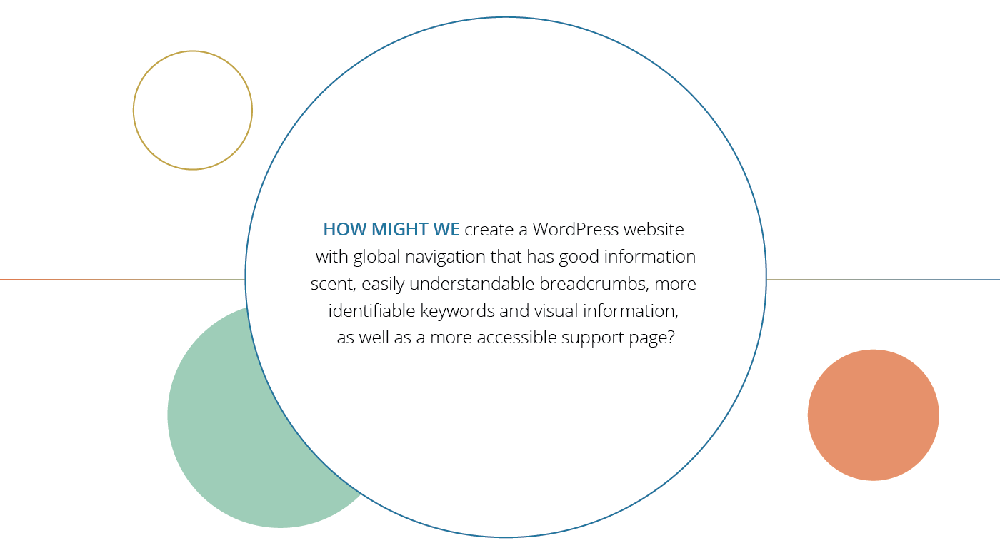
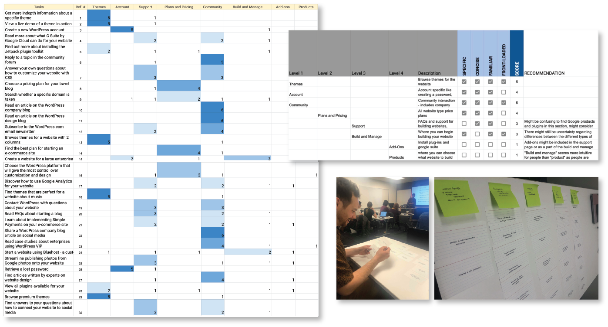
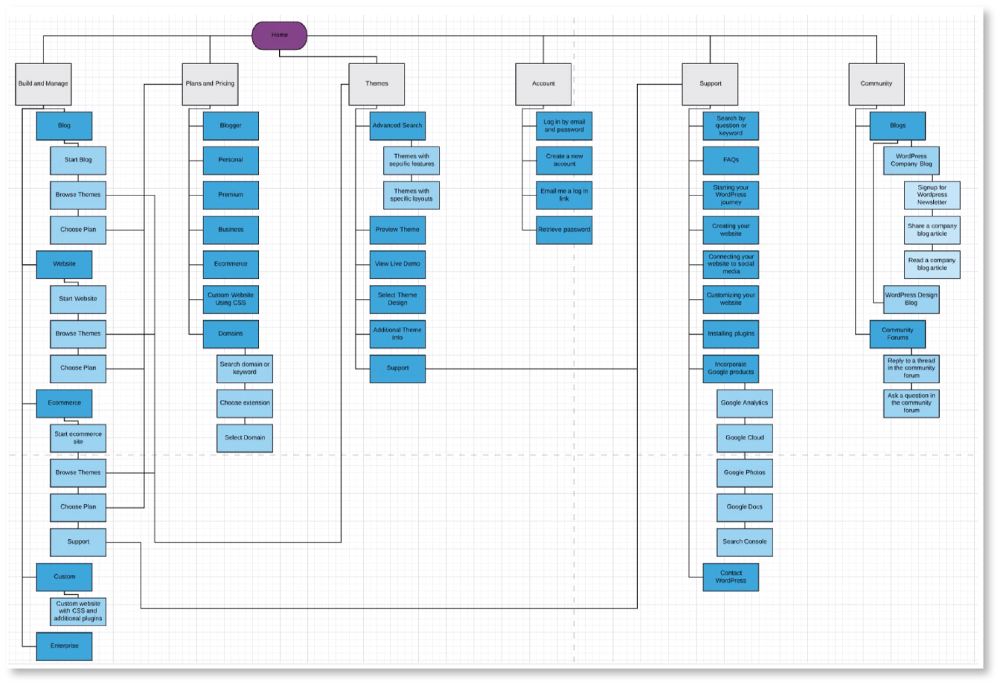
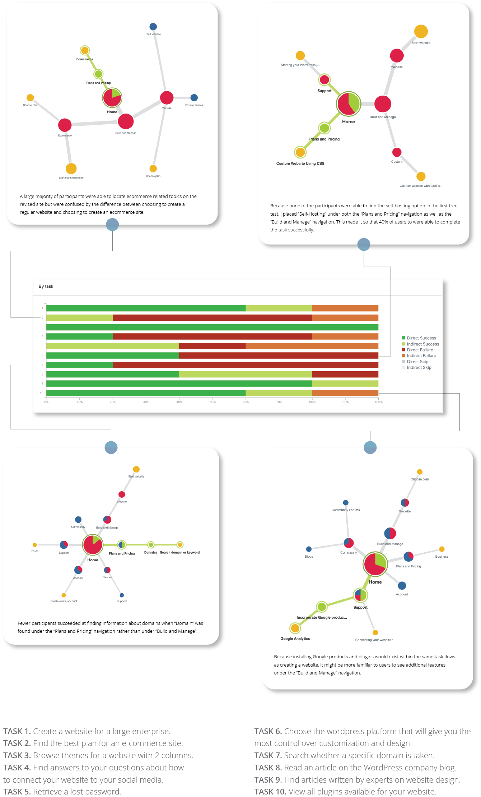

User Experience
User Research
Diagramming/Prototyping
Information Architecture
Tree Test
Card Sort
Spring 2019 UCBX
I created an initial tree test using the current WordPress global navigation to gauge the accessibility and simplicity of the current website with respect to 10 tasks that could be accomplished from the homepage. The results from the tree test as well as a quick website tear down helped identify user pain points such as ambiguous terminology and poor information scent.
A couple personas were initially created to more deeply understand the motivations behind why some individuals would use WordPress. While the exercise of creating personas was useful in terms of situating myself with the product itself, I failed to consistently refer back to these personas throughout the design process. Should I revisit this case study in the future, I would like to be more intentional about the use of personas and consider other design frameworks that may be more applicable to the problem space.
6 participants were asked to complete a card sort using 30 tasks derived from the current WordPress homepage. The data from this card sort and the resulting groups from each of the 6 participants were then normalized, standardized, and ranked to determine a final list of groupings that may be used to improve upon the existing website.
Using the updated WordPress navigation groups, I generated a revised site map and tree test. Results from the second tree test highlighted additional user paint points and provided data to generate low and mid fidelity prototypes of an updated navigation design.
 Although I attempted to resolve ambiguous terminology and poor information scent in my redesign, a second tree test revealed that users were still confused as to the differences between individual vs. eCommerce related products and consistently struggled to identify how to build a self-hosted website. I decided to create separate tabs for creating a website and creating an eCommerce site. I also placed "Self-Hosting" under both the "Build and Manage" as well as the "Plans and Pricing" tabs to make it easier for users to find. On the self-hosting page, I also included an explanation of what the term "Self-Hosting" means and breadcrumbs right below the global navigation to allow users to track where they are within the site. Because I only had 6 weeks to complete this project, I would have liked to conduct another iteration of card sorting to better comprehend how users might more instinctually navigate the WordPress site. I would have also liked to conduct a few rounds of usability tests on my WordPress navigation redesign and implement user feedback to create a better product.
This case study examining and attempting to redesign the information architecture of the global navigation on the WordPress website taught me a significant amount in terms of content hierarchy, organization, and accessibility. In future iterations of the WordPress website redesign, I would like to address the organization of information on the WordPress website support pages as well as continue to find ways to increase user knowledge and accessibility around pages related to creating self-hosting websites.
Still curious about my design process? Read more about my WordPress case study here.